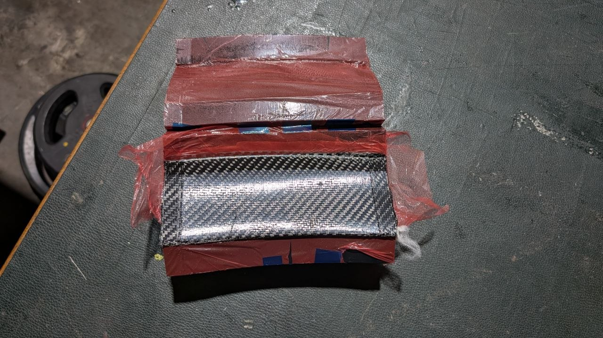
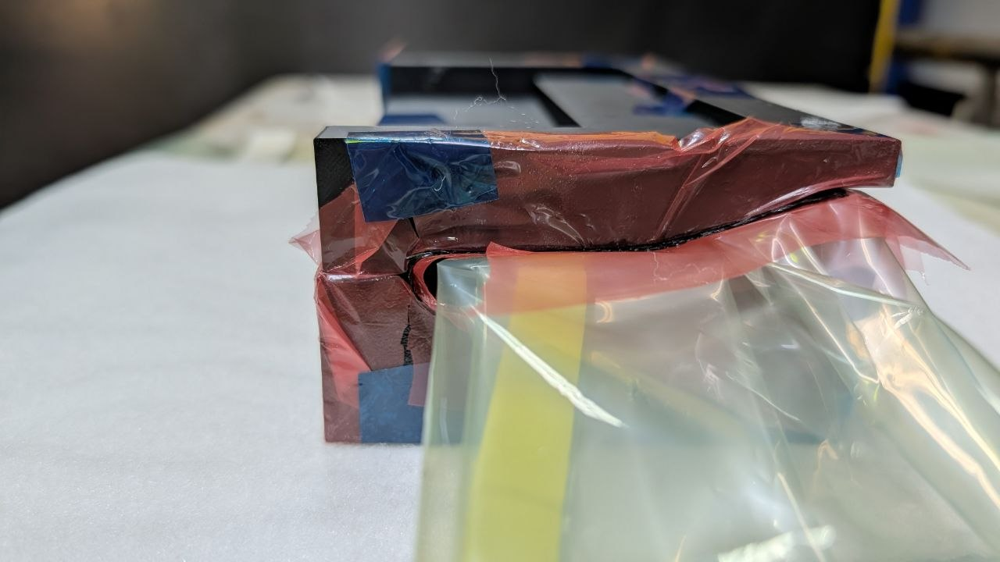

7. Manufacturing & Prototyping
7.1 Vacuum Infusion Manufacturing

Flat panels were manufactured via vacuum infusion: dry fibre was laid on a metal plate, sealed with tape and infused under vacuum with resin distributed by flow mesh. After a 48-hour cure, panels were trimmed and waterjet-cut into parts; layup schedules are in Appendix B.
7.2 Rear Wing Elements and Front Wing Mainplane
These larger elements were made using a wet-layup. Two layers of carbon fiber were laminated with epoxy resin, then draped over a male mold and sandwiched in between the female part of the mold to hold its shape. Weights were then put on top of the mold and left to cure.

This manufacturing method is more cost-effective for larger elements due to the relative affordability of EPS foam.
7.3 Front Wing Flaps
A female ABS mold was 3D printed. Prepreg Carbon Fiber was used for this, with the plies laid inside the lined female mold (Figure 17) and consolidated using an internal vacuum bag (Figure 18).


Female moulds were chosen over male moulds to prevent breather-fabric texture on the aerodynamic surface, ensuring a smoother finish. However, tight flap geometry often caused vacuum bags to fail, producing deformation or dry patches. The simpler straight-flap redesign mitigates these defects and improves CAD accuracy.
7.4 Bonding of Elements

An acrylic bonding jig was used to hold the internals in the correct position while they were bonded. Its pieces are bolted to one another, and a horizontal locking piece keeps them aligned. The carbon rods that carry the internals are also bolted to the jig, keeping the assembly accurate to the CAD.

The carbon fibre skin is bonded to the internals, and weight plates are placed on top to apply even clamping pressure across the bonding surfaces while the epoxy cures.